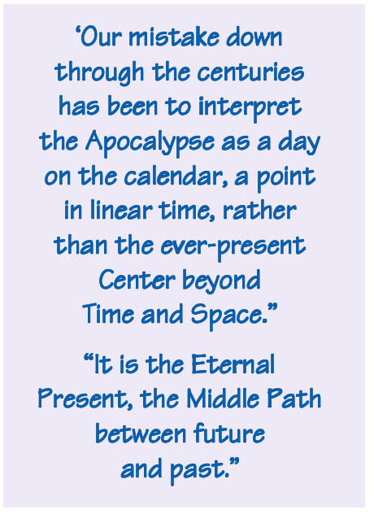
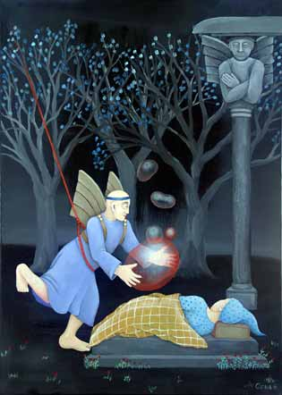

"For the Days of the Lord are coming... And it shall come to pass afterward, saith God, that I will pour out my Spirit on all flesh; and your sons and your daughters shall prophesy, your old men shall dream dreams, your young men shall see visions. Even on my servants and handmaidens I will pour out, in those days, my Spirit; and they shall prophesy." Words of the Lord himself revealed to the prophet Joël preserved in Joël 2.28-30 in the Old Testament; due to their crucial importance, repeated in the New Testament in Acts 2.16-18.
Part One
Prophecies of the End of Time, the Apocalypse, abound all over the world. And the clues give evidence that they arise from the DreamTime. Three things have intrigued me all my life: dreaming, myth and the concept of time; they have led me on strange journeys, inward and outward. Recently, I was wandering in Asia and years ago, did a stint with the Peace Corp. in South America.
While in Asia, I spent almost a month practicing Vipassna meditation at a monastery in the north of Thailand. Immediately afterward, I went south to a predominantly Muslim area. Here I read the Koran, with its continual theme of the Resurrection Day, as I listened to the periodic Islamic call to prayer echoing through the salty air. All of this is flavored with the fact that I grew up in an Evangelical Christian household and constantly heard of the Second Coming of Christ and the Apocalypse.
Ever since I was a child, the moment between waking and sleeping, consciousness and subconsciousness, has tantalized me, lured me into wanting to experience more of that timeless state. This exceptional moment is illusive, seemingly ungraspable—sometimes a moment of profound wisdom and tranquility, sometimes a clandestine moment of fear. It is a moment of strange awareness—realization of my own mortality and the world's impermanence. It seems a hazy window into the realm of death and deathlessness beyond... just out of reach. That ‘time’ is our personal prophet peering into the End of Time.
When I was an adolescent, I slept in late one Saturday morning. I had a long and elaborate dream about our German shepherd. At the dream's conclusion, I saw her run into the path of our load truck as it was backing out of the driveway. I heard a sounding thud, then a yelp. I awoke to hear commotion outside my bedroom window. Later that day I asked my dad and brothers if something had happened to our dog that morning. "Yes, she got in the way of the truck as we were backing out and was hit. Fortunately, she wasn't seriously hurt," my dad said.
"Could it be that my entire dream about our German shepherd had occurred within that split second when she was hit by the truck?" I wondered. Other previous dream experiences gave evidence to this theory. This was the beginning of a hypothesis: time is relative to each individual's state of consciousness and this mystery of time can be explored in that moment between sleeping and waking, subconsciousness and consciousness.
Isn't all of Nature subject to endless cycles of lying dormant and awakening? It is at the time of dying that plants go to seed. And the seed's sprouting is the moment of resurrection, of waking. Falling asleep and dying: are they really any different from one another? When we die, so our conception of Time dies with us; and hence, so ends Time itself. This is what Logic and Intuition together lead me to understand.

I have since noticed how lucid dreaming occurs when my consciousness straddles the line between waking and sleeping; it seems a consciousness that can simultaneously see into both realms. I always wanted to experiment further into this realm by keeping myself awake for several nights. However, I lacked the stamina.... until I came to the Buddhist monastery. Gautama Buddha discovered, some 500 years before Christ, that the cycles of Time and suffering could be transcended through what he called "the Middle Path" or "the Eightfold Path." Training the mind to follow this path is the point of Vipassna meditation. Buddhists also call it focusing on the Present Moment, not letting the mind stray to either the future or the past. This, I realized, is also the point of the teachings of Jesus Christ, particularly in his Sermon on the Mount: Keep your eye "single," focusing on now rather than worrying about yesterday or tomorrow. In the Torah of Jesus' faith, the unspeakable Name of God—discovered by Moses at the burning bush—is a play on the Hebrew word for "to be." It roughly means "the Eternal Present." When I shared this fact with my Vipassna meditation teachers, they were delighted. From then on they often reminded me to keep my focus on the Eternal Present. My teachers gave me day-to-day assignments of walking and sitting meditation. I was clueless as to what they had in mind for me the next day or in the "grand finale" of my meditation practice. I often complained how sleepy I was becoming. Even so, they continued to tell me to reduce the time I slept each night.
Toward the end of my instruction, they told me to go twenty-four hours without sleeping, with a particular walking and sitting meditation assignment. After the twenty-four hours, I thought my ordeal was finished... but they surprised me again, telling me to go another twenty-four hours without sleeping. Following that, I had to go yet another twenty-four hours of sleeplessness, making a total of three days and three nights of without sleep! One of my assignments was to tabulate how many times I nodded off during meditation. This they called "Arising and Ceasing." Eventually it dawned on me that this Arising and Ceasing was that very moment I had wanted to capture! This was that moment between sleeping and waking: the Middle Path, the Eternal Present!
I was so exhausted it was unbearable. I was tempted to lie down and slumber it all away. I finally gave up on the lotus position and crouched on the floor with my head on my knee. That way I could rest a little more and hopefully not fall entirely asleep. I was coming to the point of giving up. "If I sleep, I sleep. If I don't, I don't. I just don't care any more," I finally thought, with my head resting on my knee in resignation. Then, something I'd never experienced before unexpectedly happened. Indescribable peace fell over me. I noticed a fading person with his head on his knee. I honestly didn't know who this person was, whether it was me or the Buddha or someone else. I lost all conception of "I" and "me." Then there was no-body. All senses and all thought ceased. All was blank, empty. The closest description I can share is that all was a pale blue light of emptiness. No pain, no-thing, just utter peace and silence. This experience lasted perhaps 20 minutes—I’m not sure. I felt I could have stayed there forever, but I also felt the urge to come back. When I did, I was completely awake, rejuvenated, refreshed, and blissfully at peace, as if I'd had the best sleep in my life. Then I understood why "Buddha" means "awakened one."

Part Two
After leaving the monastery, I remembered that three days and three nights signifies death and resurrection, or transformation in many mythologies of the world. For example, the Sumerian goddess Inanna dies and is hung on a pole in Hell for three days and three nights before she resurrects. Jonah spends three days and three nights in the whale's belly. Jesus says that the Son of Man must spend three days and three nights in the heart of the Earth. The moon is obscured for three days and three nights.
The heart of the earth, the center of the world, the Middle Path: this concept is the factor that links the world's myths and gives us a clue into the End of Time, the Apocalypse. It is the Dream Time. Curiously, in mythologies throughout the world, we find there is a divine incarnation who descends, dies, and resurrects at the Middle of the World, at the Center of the Cross of the junction of the four directions. This Center is the clashing of opposites and the union of compliments into ultimate oneness. This union is often represented by the central axis of the Pyramid, with four corners converging into the fifth, which is the apex. This union is also commonly represented by the Tree of Life, the Axis at the Center of the four realms of the world. The Sumerian incarnation of the goddess Inanna, the Norse Woden, the Aztec Quetzalcoatl, and the North American Corn Maiden, to name a few; each descend, die, and resurrect at the Center of the World, of the Cross. Another variation on this theme is the universal myth of the Great Deluge. In Native American mythologies, the Tree of Life at the Center of the Cross becomes the ladder of Salvation by which people and animals ascend from the flooded underworld to rebirth into a New World. In many cultures, this Tree of Life is hollowed out or constructed into a boat that carries earthly creatures to Salvation.
In the Dhamapada—the sayings of the Buddha—we read that Death overtakes all creatures as a flood overtakes a sleeping village. Buddha's teaching, the Middle Path, is called the Canoe that carries us to Salvation. Similarly, Jesus compares the End of the World, the End of Time, to Noah's flood. Both Jesus Christ and Gautama Buddha say the same thing: we must keep vigilant, lest the flood overtake us. The Koran similarly says we must keep vigilant, lest the Apocalypse overtake us unawares.
Our mistake down through the centuries has been to interpret the Apocalypse as a day on the calendar, a point in linear time, rather than the ever-present Center beyond Time and Space. We will all be swallowed into this Center, sooner or later. It is the Eternal Present, the Middle Path between future and past. The ancient prophets, whether they lived 1500, 2000 or 2500 years ago, always said the same thing: the Apocalypse is "at hand," and it will come upon "this generation." This concept has had overly-logical religious scholars confused for millennia!
Notice that in various world mythologies—such as Aztec, Greek, Hindu, Babylonian and Jewish—the prophecies each speak of time divided into four periods, with a fifth period (or end of the fourth) being the time of Apocalypse. Each period is represented by the astrological elements of the four seasons: Earth, Air, Water, and Fire. Each of these cultures also agrees that the fifth (or end of the fourth) is the time of "mixture." In India, Israel, Greece, and Babylon, these ages were represented as Gold, Silver, Bronze, Iron, and Mixture. In India, Mesoamerica and North America, these ages are represented by the colors or castes of the human race dispersed into the four realms of the earth, with the fifth being the End... when all the colors or castes mix and the boundaries between hierarchies dissolve. This fifth age is one of contradicting chaos or unifying salvation, depending on the perspective.
In the Old Testament book of Daniel, these same mythic motifs are the dreams of the Babylonian emperor Nebuchanezzar. And these are the motifs Jesus refers to in the New Testament. In his first dream, Nebuchanezzar sees these four ages: Gold, Silver, Bronze, Iron, and Mixture. In his second dream, he sees the World Tree, dying and resurrecting. Yes, this is the Dream Time we are peering into.
In the Old Testament book of Ezekiel and the New Testament book of Revelation, these four ages metamorphose into the four Beasts of the Zodiac, representing the four seasons of Time: The Calf (Taurus), the Eagle (Scorpio), the Lion (Leo), and the Man (Aquarius), with the fifth, the mysterious Divine Incarnation, at the Center. In Aztec myth, each of these four ages is represented by a god, a color and an astrological element. The fourth is the mortal Quetzalcoatl, and the fifth is the immortal Quetzalcoatl. This is comparable to the Bible's fourth image: the mortal Aquarius the Man, and the fifth Son of Man in the Center of the four.
Because of our desire to escape the Present Moment, we love to put our hope in Apocalyptic events on the calendar, whether we speak of Christ's coming, the Age of Aquarius or Y2K. But have we forgotten that Capricorn follows Aquarius, starting us over again? Have we forgotten that a galaxy takes millions of years to make one revolution? Have we forgotten that there are four ages within four ages, following for ages ad infinitum? Hinduism calls these ages Yugas and clearly points out their infinite nature.
The fourth age seems like the age of Salvation. Many people perceive the imminent Age of Aquarius as the coming of the time of hope.... and this is why it can be deceptive. Good times are often deceptive, because we cling to them. Hence, in reality, the end of the fourth age—rather than its beginning—truly does become the time of Salvation for many, not because it is a time of prosperity and hope but because it is a time of disillusionment. We finally see that the age of hope comes to an end and we are right back where we started: Disillusioned.
This is when we realize that our only true hope, our only joy, is to accept the Present Moment, to submit to it through good and bad, with all of our being, all of our strength.
Surely good times come, then bad times come. Good karma, bad karma. The four beasts of the Apocalypse, the four ages of the Zodiac, revolve forever and ever and ever in the wheel of Samsara around the Central Fifth, rising and bowing before the Throne, as we read in the book of Revelation.
The Central Fifth is the Eternal Present. It is Mohammed's Day of Resurrection, Krishna's and Buddha's Middle Path, Lao Tsu's Tao, Moses' Day of the Lord, and the Australian Shaman's DreamTime. It is the I AM.
Ultimately, I believe ‘The End of Time’ will merely be the end of our perception of time as we now measure it with clock and calendar. If we can't find our contentment within the Present—through good and bad, at the center of the Cross of contradictions and compliments— then we'll never find contentment and our waiting for Salvation at the End of Time will have been in vain.
Be Here, Now. ∞